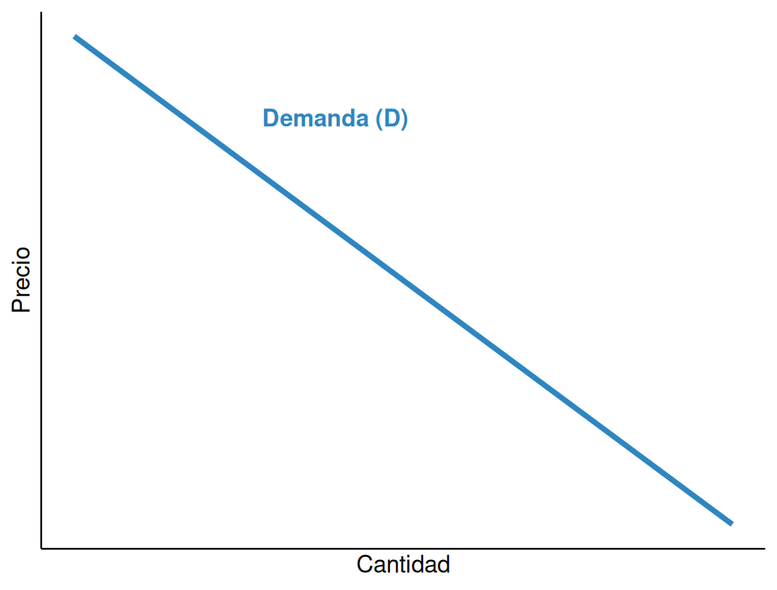
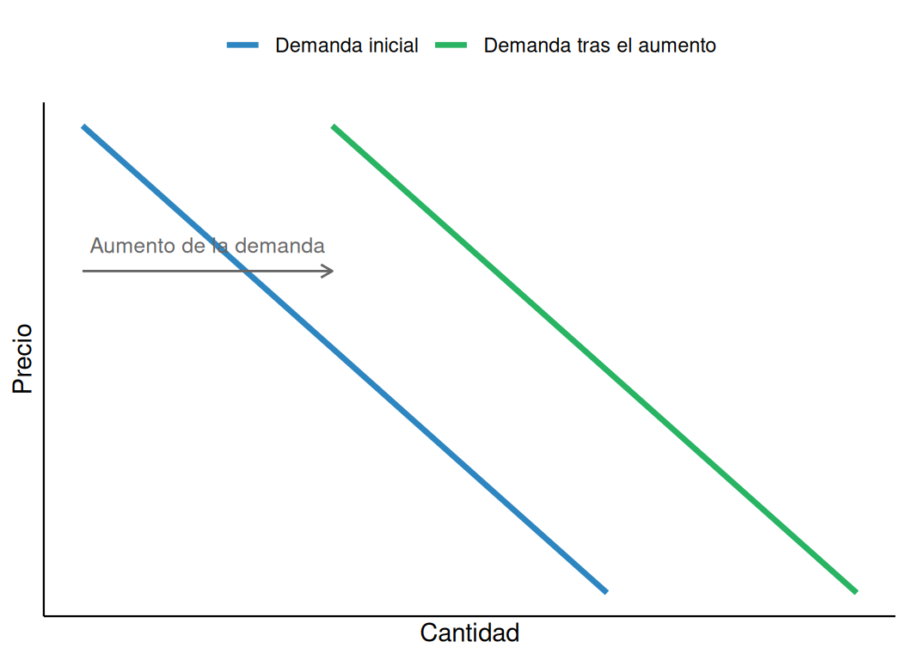
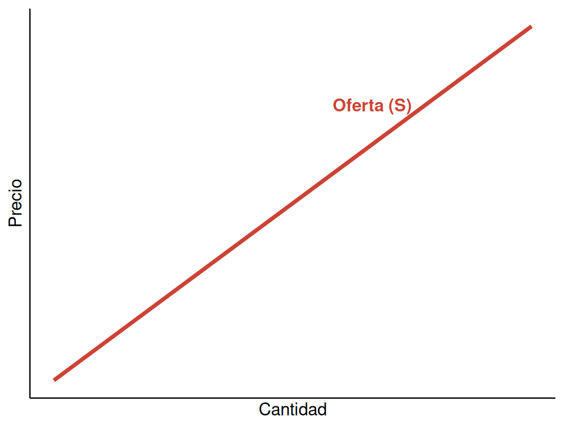
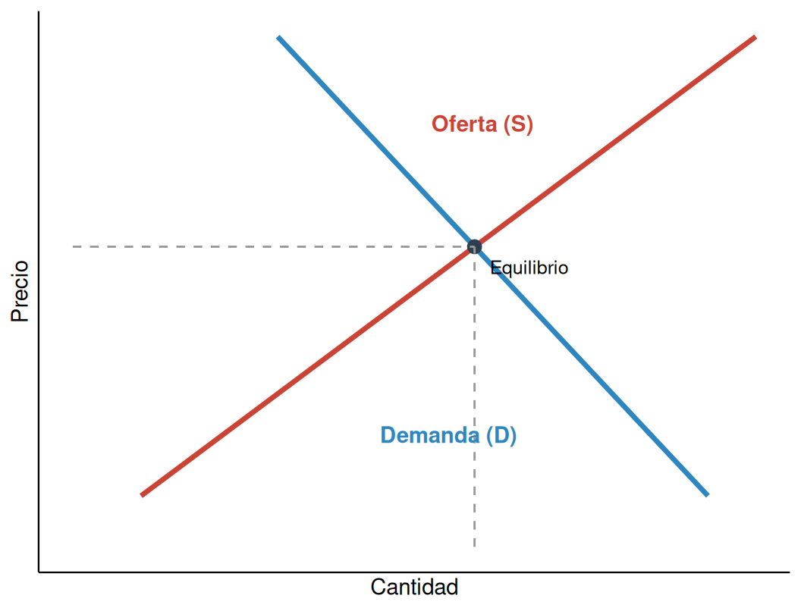

5 El mercado: oferta, demanda y elasticidad
5.1 El mercado y sus tipos
NotaDefinición
Un mercado es el conjunto de mecanismos mediante los cuales compradores y vendedores entran en contacto para intercambiar bienes y servicios a un precio determinado.
No es necesario un lugar físico: un mercado puede ser un puesto de fruta, una lonja de pescado, una plataforma de comercio electrónico o la bolsa de valores. Lo que define a un mercado no es el espacio, sino la interacción entre quienes ofrecen y quienes demandan un bien.
Los mercados se clasifican, entre otros criterios, según el grado de competencia que existe entre los vendedores. En este tema se analiza el modelo de competencia perfecta: un mercado con un número elevado de compradores y vendedores, ninguno de los cuales tiene capacidad individual para influir en el precio, que además es idéntico —el bien es homogéneo— y en el que todos los agentes disponen de la misma información.
5.2 La demanda
NotaDefinición
La demanda es la cantidad de un bien o servicio que los consumidores están dispuestos y son capaces de comprar a un precio determinado, en un periodo de tiempo concreto.
5.2.1 La ley de la demanda
ImportanteLa ley de la demanda
Manteniéndose todo lo demás constante (ceteris paribus), cuanto mayor es el precio de un bien, menor es la cantidad demandada; y cuanto menor es el precio, mayor es la cantidad demandada.
Esta relación inversa entre precio y cantidad se explica por dos efectos. El efecto sustitución: cuando un bien se encarece, los consumidores lo sustituyen por otros bienes similares que ahora resultan relativamente más baratos. Y el efecto renta: cuando un bien se encarece, el poder adquisitivo real de los consumidores disminuye, por lo que compran menos de ese bien —y, en general, menos de todo—.
Por convención, la curva de demanda se representa con el precio en el eje vertical y la cantidad en el horizontal, y tiene pendiente negativa: a medida que baja el precio, sube la cantidad demandada.
5.2.2 Desplazamientos de la curva de demanda
Es fundamental distinguir entre un movimiento a lo largo de la curva —causado únicamente por un cambio en el precio del propio bien— y un desplazamiento de toda la curva —causado por un cambio en cualquier otro factor que afecta a la demanda—.
Los principales determinantes que desplazan la demanda son la renta de los consumidores (un aumento de la renta desplaza la demanda hacia la derecha para un bien normal, y hacia la izquierda para un bien inferior), el precio de los bienes relacionados (un aumento en el precio de un bien sustitutivo desplaza la demanda del bien analizado hacia la derecha; un aumento en el precio de un bien complementario la desplaza hacia la izquierda), los gustos y preferencias de los consumidores, las expectativas sobre precios o ingresos futuros, y el número de compradores en el mercado.

5.3 La oferta
NotaDefinición
La oferta es la cantidad de un bien o servicio que los productores están dispuestos y son capaces de vender a un precio determinado, en un periodo de tiempo concreto.
Esta definición lleva a una relación muy concreta entre precio y cantidad, conocida como la ley de la oferta.
ImportanteLa ley de la oferta
Manteniéndose todo lo demás constante, cuanto mayor es el precio de un bien, mayor es la cantidad ofrecida; y cuanto menor es el precio, menor es la cantidad ofrecida.
Esta relación directa se explica porque un precio más alto hace más rentable la producción del bien, lo que incentiva a las empresas ya presentes a producir más y atrae a nuevas empresas al mercado.

Los principales determinantes que desplazan la oferta son el coste de los factores de producción (un encarecimiento de las materias primas o de los salarios desplaza la oferta hacia la izquierda), la tecnología (una mejora tecnológica reduce los costes y desplaza la oferta hacia la derecha), el número de vendedores, las expectativas de precios futuros, y los impuestos y subvenciones sobre la producción (un impuesto desplaza la oferta hacia la izquierda; una subvención, hacia la derecha).
5.4 El equilibrio de mercado
NotaDefinición
El equilibrio de mercado es la situación en la que la cantidad ofrecida coincide con la cantidad demandada, a un precio llamado precio de equilibrio.

Cuando el precio de mercado se sitúa por encima del precio de equilibrio, la cantidad ofrecida supera a la demandada y aparece un exceso de oferta; la presión competitiva entre vendedores tiende entonces a reducir el precio hasta el equilibrio. Cuando el precio se sitúa por debajo del equilibrio, la cantidad demandada supera a la ofrecida y aparece un exceso de demanda o escasez; la competencia entre compradores tiende a elevar el precio hasta el equilibrio.
TipEjercicio resuelto: cálculo del equilibrio
La demanda de un bien es \(Q_D = 100 - 4P\) y la oferta es \(Q_S = 20 + 6P\). ¿Cuál es el precio y la cantidad de equilibrio?
Solución: en el equilibrio, \(Q_D = Q_S\):
\[100 - 4P = 20 + 6P\] \[80 = 10P\] \[P = 8\]
Sustituyendo en cualquiera de las dos ecuaciones: \(Q = 100 - 4(8) = 68\).
El precio de equilibrio es 8 y la cantidad de equilibrio es 68 unidades.
Un desplazamiento de la demanda o de la oferta modifica el punto de equilibrio. Un aumento de la demanda (desplazamiento hacia la derecha) eleva tanto el precio como la cantidad de equilibrio; una disminución de la demanda los reduce a ambos. Un aumento de la oferta (desplazamiento hacia la derecha) reduce el precio de equilibrio pero aumenta la cantidad; una disminución de la oferta eleva el precio y reduce la cantidad.
| Desplazamiento | Efecto sobre el precio | Efecto sobre la cantidad |
|---|---|---|
| Aumento de la demanda | Sube | Sube |
| Disminución de la demanda | Baja | Baja |
| Aumento de la oferta | Baja | Sube |
| Disminución de la oferta | Sube | Baja |
5.5 La elasticidad precio de la demanda
NotaDefinición
La elasticidad precio de la demanda mide la sensibilidad de la cantidad demandada de un bien ante variaciones en su precio.
Se calcula como el cociente entre la variación porcentual de la cantidad demandada y la variación porcentual del precio:
\[E_D = \frac{\%\Delta Q}{\%\Delta P}\]
Dado que la demanda tiene pendiente negativa, este valor es habitualmente negativo, aunque se suele trabajar con su valor absoluto para clasificar los bienes.
| Tipo | Valor absoluto | Significado | Ejemplo |
|---|---|---|---|
| Elástica | |E| > 1 | La cantidad varía más que proporcionalmente que el precio | Viajes de ocio, bienes de lujo |
| Inelástica | |E| < 1 | La cantidad varía menos que proporcionalmente que el precio | Bienes de primera necesidad, tabaco |
| Unitaria | |E| = 1 | La cantidad varía en la misma proporción que el precio | Caso teórico intermedio |
| Perfectamente elástica | |E| = ∞ | Cualquier subida de precio hace caer la demanda a cero | Producto sin diferenciación en competencia perfecta |
| Perfectamente inelástica | |E| = 0 | La cantidad demandada no varía, sea cual sea el precio | Medicamentos vitales sin sustitutos |
Varios factores determinan la elasticidad de un bien: la existencia de sustitutivos (cuantos más sustitutivos cercanos tenga un bien, más elástica es su demanda, porque el consumidor puede cambiar fácilmente de producto ante una subida de precio); el carácter de necesidad o de lujo (los bienes de primera necesidad tienden a ser inelásticos, los de lujo, elásticos); la proporción del presupuesto que representa el bien (cuanto mayor es esa proporción, más elástica es la demanda); y el horizonte temporal (la demanda suele ser más elástica a largo plazo, porque los consumidores tienen tiempo de encontrar alternativas).
TipEjercicio resuelto: cálculo de la elasticidad
El precio de un bien sube de 10 € a 12 € (un incremento del 20 %) y la cantidad demandada baja de 100 a 85 unidades (una caída del 15 %). ¿Cuál es la elasticidad precio de la demanda?
Solución:
\[E_D = \frac{-15\%}{20\%} = -0{,}75\]
En valor absoluto, \(|E_D| = 0{,}75 < 1\): la demanda de este bien es inelástica, porque la cantidad demandada varía menos que proporcionalmente al precio.
La elasticidad tiene una consecuencia directa sobre los ingresos totales de las empresas (\(IT = P \times Q\)): si la demanda es elástica, una subida de precio reduce los ingresos totales, porque la caída de la cantidad demandada es proporcionalmente mayor que la subida del precio; si la demanda es inelástica, una subida de precio aumenta los ingresos totales, porque la caída de la cantidad es proporcionalmente menor.